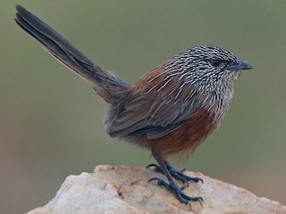

Amytornis ballarae
The Kalkadoon Grasswren is a small rusty brown bird with finely streaked plumage and a long cocked tail, found in rocky areas and gorges with spinifex bushes in the Mount Isa region of northwestern Queensland. They have dark grey-brown upperparts, the underparts are a rich grey with adult female with rich reddish brown flanks and grey flanks (male).